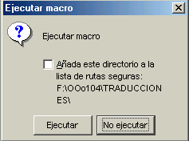
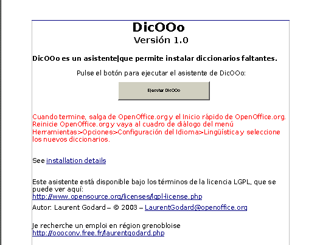
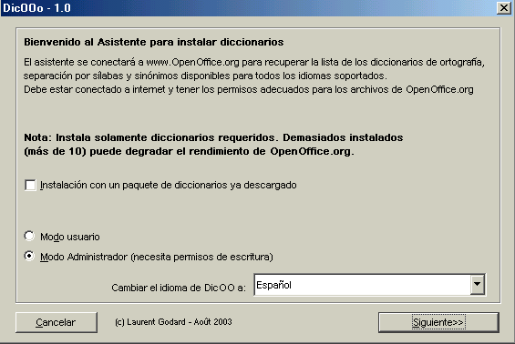
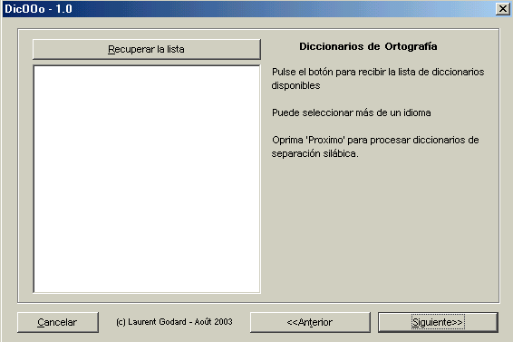
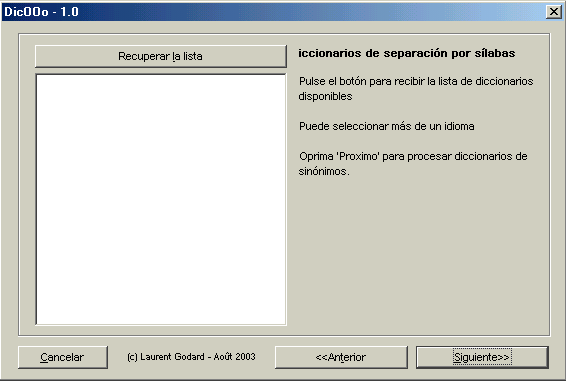
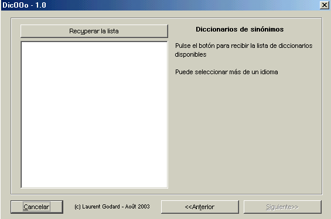

Tutorial para DicOOo
Qué es DicOOo ?
 Dicoo es un asistente de software que permite a los usuarios la instalación fácil de diccionarios (ortografía,
separación en sílabas y sinónimos)
Dicoo es un asistente de software que permite a los usuarios la instalación fácil de diccionarios (ortografía,
separación en sílabas y sinónimos)
Este programa usa una macro escrita en OOBasic que conecta al servidor web y suministra una lista de los diccionarios disponibles.
El producto ha sido creado por Laurent Godard, un consultor y desarrollador independiente para OpenOffice.
Cómo trabaja DicOOo?
La macro primero hace algunas preguntas y luego conecta al usuario con un servidor web de OpenOffice.org. A continuación muestra la lista de diccionarios disponible (ortografía, separación en sílabas y sinónimos) Una vez que se ha seleccionado el lenguaje deseado, Dic Ooo descarga e instala los diccionartios. Si es necesario se le pedirá que configure los parámetros lingüisticos.
Características principales
-
MultiOS: Disponible para Windows, Linux, Mac, Solaris
-
Multiversión: compatible con todas las versiones de OOo
-
Multilenguaje: el lenguaje de GUI puede ser cambiado. La primera verisón está disponible en 10 lenguajes.
-
Varios modos de instalación: se puede elegir entre la instalación en un servidor (los diccionarios pueden ser usados por todos los usuarios) o instlación para un usuario único
-
Auto-actualización: Cada vez que se lo usa, DicOOo verifica la disponibilidad de una nueva versión y permite al usuario instalarla.
-
Maneja la instalación fuera-de-línea usando instaladores. Estos instaladores están disponibles en el servidor del proyecto Lingucomponent.
-
Licencia LGPL, autor: Laurent Godard
Usando DicOOo
Descargue DicOOo y abra el archivo Dicooo.sxw, acepte el uso de la Macro y verá el siguiente mensaje

Haga "click" en Ejecutar y verá la siguiente página:
Seleccionando uno de los idiomas, la página correspondiente se muestra como una página web en HTML. En la imágen de abajo se la puede observar

Ahora haga "click" en el Botón "Ejecutar DicOOo". La macro comenzará a ejecutarse.
Esta guía explica como manejar el proceso de instalación, paso a paso a partir de aquí.
Instalación paso a paso
1) Seleccionar el modo de actualización

Disponemos de 4 alternativas:
-
Estoy conectado a Internet, descargo directamente y:
-
Quiero instalar los diccionarios en forma automática para un usuario único
-
Soy un administrador y quiero instalar los diccionarios para todos los usuarios
-
-
No estoy conectado a Intener pero he bajado el paquete y:
-
Quiero instalarlo para un usuario único
-
Soy un administrador y quiero instalar los diccionarios para todos los usuarios
-
En el ejemplo siguiente, tengo acceso a Internet, soy un administrador y quiero instalar los diccionarios para todos los usuarios.
2) Selección del diccionario principal

Al menos debe seleccionar un diccionario, sin embargo, no hay límites para la cantidad de diccionarios a seleccionar. Se recomienda no seleccionar más de 10 diccionarios para no tener problemas de inestabilidad.
Al oprimir el botón Recuperar la Lista aparece la lista de Diccionarios disponibles en el sitio de la web de OpenOffice.org
Aquí, elegimos el diccionario Español (Spain) así como su separador en sílabas, el paso siguiente es pués, podríamos elegir también un diccionario Español para algún país específico distinto de España.
Si deseamos hacer una selección múltiple se debe usar la tecla <Ctrl> que se mantiene oprimida mientras se seleccionan los diccionarios.
Al terminar la selección se oprime la tecla <Siguiente>
3) Selección del diccionario de separación por sílabas
Aparece la siguiente pantalla:

Otra vez, oprimimos la tecla "Recuperar la lista" y aparecerán todos los diccionarios disponibles para la separación por sílabas, con el prefijo "hyph" seguido por el símbolo del idioma.
Seleccione el diccionario de la lista.
(N del T) Si selecciona más de un diccionario, mantenga oprimida la tecla <Ctrl>
Ahora, haga click en "Siguiente" para seleccionar el diccionario de Sinónimos
4) Selección del Diccionario de Sinónimos
Como en el otro Diccionario, haga "click" sobre "Recuperar la lista"

Seleccion el diccionario de la lista.
(N del T) Si va a seleccionar más de un diccionario, mantenga oprimida la tecla <Ctrl>
(N del T) No hay diccionario de sinónimos en idioma Español (Castellano) ni para los demás idiomas que se hablan en España (Catalá, Gallego, Valenciano o Vasco)
5. Paso final
Esto es todo! La macro comenzará ahora a descargar e instalar los diccionarios seleccionados.
La instalación está completa ahora. Usted puede desplegar los archivos "Leame" de los diccionarios haciendo "click" en "Lea los archivos de información para cada diccionario instalado" (autores, licencias, información de instalación, etc)
(N del T) Para activar los diccionarios cargados necesitará recurrir a Herramientas > Opciones > Lingüística.
Escrito con OpenOffice.org 1.1 RC4
Copyright : (Texto del documento) ©2003 - Stéphane Purnelle
Translation in English : Yves Jacolin and Derek Torres
Traducción al castellano: Alfredo Russo
Nota sobre la Licencia Pública de Documentación
Los contenidos de esta Documentación están sujetos la Versión 1.0 de la Licencia Pública de Documentación (la "Licencia") usted puede usar esta Documentación si satisface los requerimientos de esta Licencia. Una copia de la Licencia está disponible en http://www.openoffice.org/licenses/PDL.html.
La Documentación Original es: Tutoriel de DicOOo. El Autor de la Documentación Original es Stéphane Purnelle Copyright © 2003. All Rights Reserved. (Contactos con el Autor: stephane.purnelle@tiscali.be).
Aportes realizados por: Stéphane Purnelle, Yves Jacolin (traducción), Derek Torres (traducción) y Alfredo Russo (traducción).
Los párrafos creados por tienen Copyright ©2003. All Rights Reserved. (Stéphane Purnelle, Yves Jacolin y Derek Torres).
NOTA: El texto de este Apéndice así como partes del texto principal pueden diferir ligeramente del texto en los archivos originales de la Documentación. Para la instalación en Español usted debiera usar el texto de esta traducción en lugar de la que aparece en el original en Francés.
$Date: 2004/01/02 01:39:12 $